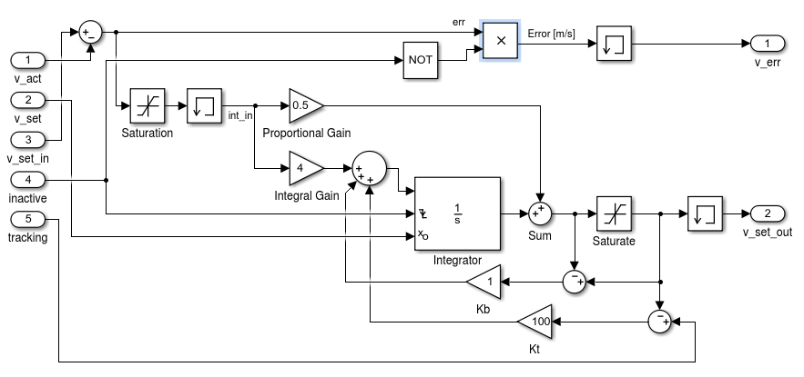
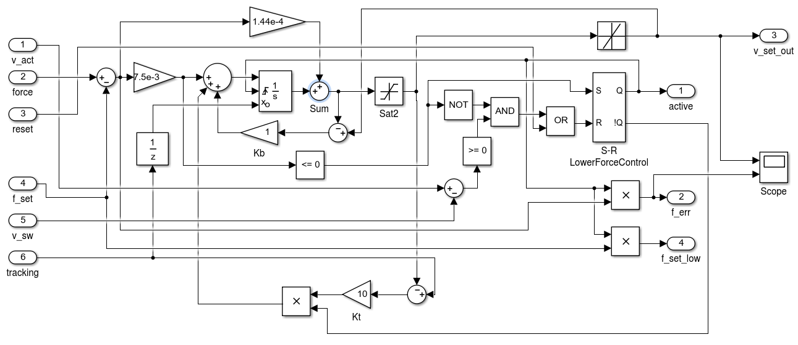
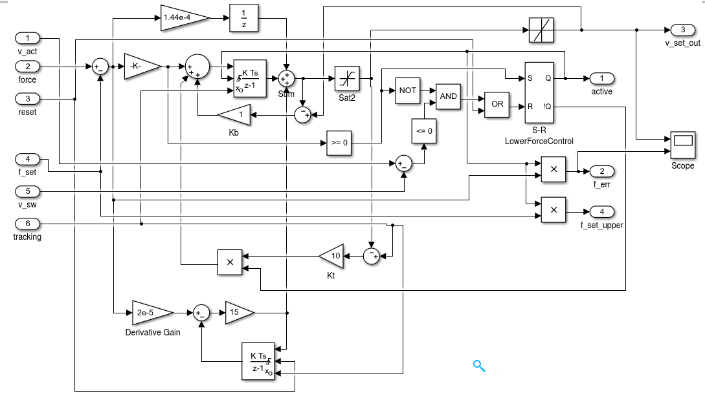
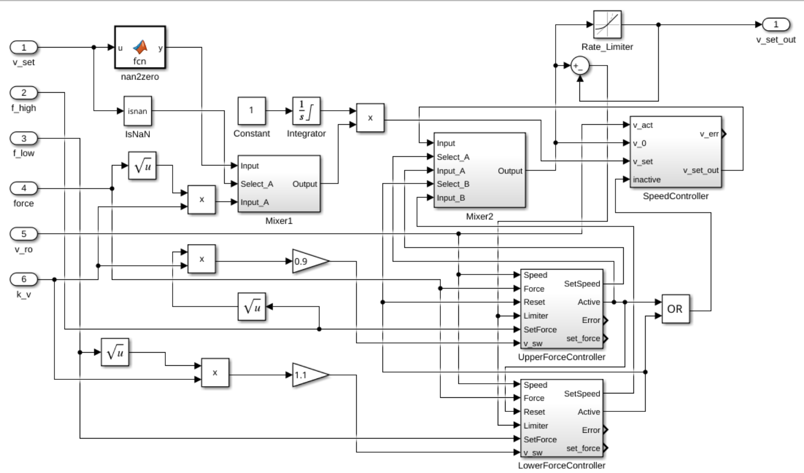

Introduction
For a kite power system, the reel-out speed of the winch must be controlled such that the maximal tether force is never exceeded, while the reel-out speed should be optimized for maximal power over the full cycle at wind speeds below rated wind speed. To keep the kite controllable, also a minimal tether force limit has to be kept. Depending on the mode of operation, one of the following three controllers is used:
Enum WinchControllerState
WinchControllers.WinchControllerState — Type
@enum WinchControllerStateThe three values that tell us which sub-controller is active.
- wcsLowerForceLimit = 0
- wcsSpeedControl = 1
- wcsUpperForceLimit = 2
CalcVSetIn
WinchControllers.CalcVSetIn — Type
mutable struct CalcVSetInComponent for calculation v_set_in, using soft switching.
Fields
- wcs::
WCSettings - mixer2::Mixer_2CH: mixer component. Default:
Mixer_2CH(wcs.dt, wcs.t_blend) - filter::LowPass: low-pass on the force,
"soft"force limiting only f_low: lower force limit of the soft law; trackscalc_v_set's argument- input_a: Default: 0
- input_b: Default: 0
WinchControllers.CalcVSetIn — Method
function CalcVSetIn(wcs::WCSettings)Constructor for component for calculation v_set_in, using soft switching.
Parameters
- wcs::
WCSettings: settings struct with the winch controller settings
Returns
- a new struct of type CalcVSetIn
WinchControllers.set_vset_pc — Method
set_vset_pc(cvi::CalcVSetIn, v_set_pc, force)Parameters:
- force: measured tether force [N]
v_set_pc: only used during manual operation or park-at-length. If it isnothing,v_set_inis calculated as function of the force.
Returns:
- nothing
WinchControllers.calc_output — Method
calc_output(cvi::CalcVSetIn)Parameters
- cvi::CalcVSetIn: A struct of type CalcVSetIn
Returns
v_set_in: Eitherv_set, or a value, proportional to the square root of the force.
WinchControllers.on_timer — Method
on_timer(cvi::CalcVSetIn)Update the mixer. Must be called once per time-step.
Parameters
- cvi::CalcVSetIn: Reference to the CalcVSetIn component
Returns
- nothing
SpeedController Type
WinchControllers.SpeedController — Type
mutable struct SpeedControllerPI controller for the reel-out speed of the winch in speed control mode. While inactive, it tracks the value from the tracking input. Back-calculation is used as anti-windup method and for tracking. The constant for anti-windup is K_b, the constant for tracking K_t Implements the following block diagram:

Fields
wcs::WCSettingsintegrator::Integrator: Default: Integrator(wcs.dt)limiter::RateLimiter: Default: RateLimiter(wcs.dt, wcs.max_acc)delay::UnitDelay: Default: UnitDelay()v_act::Float64: Default: 0v_set_in::Float64: Default: 0inactive::Bool: Default: truetracking::Float64: Default: 0v_err::Float64: Default: 0v_set_out::Float64: Default: 0sat_out::Float64: Default: 0res::StaticArraysCore.MVector{2, Float64}: Default: zeros(2)
WinchControllers.SpeedController — Method
SpeedController(wcs::WCSettings)Constructor for a SpeedController, based on the winch controller settings.
Parameters
- wcs::WCSettings: the winch controller settings struct
Returns
- a struct of type SpeedController
WinchControllers.set_inactive — Method
set_inactive(sc::SpeedController, inactive::Bool)De-activate the speed controller if the parameter inactive is true, otherwise activate it and reset the integrator and the limiter.
Parameters
- sc::SpeedController: the speed controller to de-activate or activate
Returns
- nothing
WinchControllers.set_v_act — Method
set_v_act(sc::SpeedController, v_act)Set the actual reel-out speed of the speed controller sc to v_act.
Parameters
- sc::SpeedController: the speed controller
v_act: the actual reel-out speed
Returns
- nothing
WinchControllers.set_v_set — Method
set_v_set(sc::SpeedController, v_set)Set the set speed of the speed controller sc to v_set.
Parameters
- sc::SpeedController: the speed controller
v_set: the set value of the reel-out speed
Returns
- nothing
WinchControllers.set_v_set_in — Method
set_v_set_in(sc::SpeedController, v_set_in)Set the signal v_set_in of the speed controller to v_set_in.
Parameters
- sc::SpeedController: the speed controller
v_set_in: the value to assign to the signalv_set_in
Returns
- nothing
WinchControllers.set_tracking — Method
set_tracking(sc::SpeedController, tracking)Set the signal tracking of the speed controller to tracking.
Parameters
- sc::SpeedController: the speed controller
tracking: the value to assign to the signaltracking
Returns
- nothing
WinchControllers.get_v_set_out — Method
get_v_set_out(sc::SpeedController)Calculate the output value of the controller by using a non-linear solver.
Parameters
- sc::SpeedController Reference to the SpeedController component
Returns
v_set_out: the synchronous speed, calculated by the controller
WinchControllers.get_v_err — Method
get_v_err(sc::SpeedController)Compute and return the velocity error for the given SpeedController instance sc.
Arguments
- sc::SpeedController: The speed controller object for which the velocity error is to be calculated.
Returns
- The velocity error
v_err[m/s]. If the controller is inactive, it returnsNaN.
WinchControllers.on_timer — Method
on_timer(sc::SpeedController)Update the SpeedController. Must be called once per time-step.
Parameters
- sc::SpeedController Reference to the SpeedController component
Returns
- nothing
AbstractForceController
WinchControllers.set_v_act — Method
set_v_act(fc::AFC, v_act)Set the signal v_act of the force controller to v_act.
Parameters
- sc::AFC: abstract force controller
v_act: the value to assign to the signalv_act
Returns
- nothing
WinchControllers.set_force — Method
set_force(fc::AFC, force)Set the signal force of the force controller to force.
Parameters
- sc::AFC: abstract force controller
force: the value to assign to the signalforce
Returns
- nothing
WinchControllers.set_reset — Method
set_reset(fc::AFC, reset)Set the signal reset of the force controller to reset and activate or de-activate the controller.
Parameters
- sc::AFC: abstract force controller
reset: the value to assign to the signalreset
Returns
- nothing
WinchControllers.set_f_set — Method
set_f_set(fc::AFC, f_set)Set the set force of the force controller to f_set.
Parameters
- sc::AFC: abstract force controller
f_set: the value to assign to the signalf_set
Returns
- nothing
WinchControllers.set_v_sw — Method
set_v_sw(fc::AFC, v_sw)Parameters
- sc::AFC: abstract force controller
v_sw: the value to assign to the signalv_sw
Returns
- nothing
WinchControllers.set_tracking — Method
set_tracking(fc::AFC, tracking)Set the signal tracking of the force controller to tracking.
Parameters
- sc::AFC: abstract force controller
tracking: the value to assign to the signaltracking
Returns
- nothing
WinchControllers.get_v_set_out — Method
get_v_set_out(fc::AFC)Calculate the output value of the controller by using a non-linear solver.
Parameters
- fc::AFC: abstract force controller
Returns
v_set_out: the synchronous speed, calculated by the controller
WinchControllers.get_f_err — Method
get_f_err(fc::AFC)Get the error of the force controller.
Parameters
- fc::AFC: abstract force controller
Returns
f_err: the error of the force controller
LowerForceController
WinchControllers.LowerForceController — Type
mutable struct LowerForceController <: AbstractForceControllerPI controller for the lower force of the tether. While inactive, it tracks the value from the tracking input. Back-calculation is used as anti-windup method and for tracking. The constant for anti-windup is K_b, the constant for tracking K_t Implements the following block diagram:

Fields
wcs::WCSettingsintegrator::Integrator: Default: Integrator(wcs.dt)int2::Integrator: Default: Integrator(wcs.dt)limiter::RateLimiter: Default: RateLimiter(wcs.dt, wcs.max_acc)delay::UnitDelay: Default: UnitDelay()reset::Bool: Default: falseactive::Bool: Default: falseforce::Float64: Default: 0f_set::Float64: Default: 0v_sw::Float64: Default: 0v_act::Float64: Default: 0tracking::Float64: Default: 0f_err::Float64: Default: 0last_err::Float64: Default: 0v_set_out::Float64: Default: 0sat_out::Float64: Default: 0res::StaticArraysCore.MVector{3, Float64}: Default: zeros(3)
WinchControllers.LowerForceController — Method
LowerForceController(wcs::WCSettings)Constructor for a LowerForceController, based on the winch controller settings.
Parameters
- wcs::
WCSettings: the winch controller settings struct
Returns
- a struct of type LowerForceController
WinchControllers.get_f_set_low — Method
get_f_set_low(lfc::LowerForceController)Returns the lower force setpoint for the given LowerForceController instance lfc.
Arguments
lfc::LowerForceController: The lower force controller object from which to retrieve the setpoint.
Returns
- The lower force setpoint value associated with the controller.
WinchControllers.on_timer — Method
on_timer(lfc::LowerForceController)Callback function that is triggered on a timer event for a LowerForceController instance. This function handles periodic updates or control logic that needs to be executed at regular intervals for the lower force controller.
Arguments
lfc::LowerForceController: The instance ofLowerForceControllerfor which the timer event is handled.
Returns
- nothing
UpperForceController
WinchControllers.UpperForceController — Type
mutable struct UpperForceController <: AbstractForceControllerPID controller for the upper force of the tether. While inactive, it tracks the value from the tracking input. Back-calculation is used as anti-windup method and for tracking. The constant for anti-windup is K_b, the constant for tracking K_t Implements the following block diagram:

Fields
wcs::WCSettingsintegrator::Integrator: Default: Integrator(wcs.dt)int2::Integrator: Default: Integrator(wcs.dt)limiter::RateLimiter: Default: RateLimiter(wcs.dt, wcs.max_acc)delay::UnitDelay: Default: UnitDelay()reset::Bool: Default: falseactive::Bool: Default: falsef_set::Float64: Default: 0v_sw::Float64: Default: 0v_act::Float64: Default: 0force::Float64: Default: 0tracking::Float64: Default: 0f_err::Float64: Default: 0v_set_out::Float64: Default: 0sat_out::Float64: Default: 0res::StaticArraysCore.MVector{3, Float64}: Default: zeros(3)
Usage
Create an instance to control the upper force limit in a winch system.
WinchControllers.UpperForceController — Method
UpperForceController(wcs::WCSettings)Creates and returns an upper force controller using the provided WCSettings.
Arguments
- wcs::
WCSettings: The settings structure containing configuration parameters for the winch controller.
Returns
- An instance of the upper force controller configured according to the provided settings.
WinchControllers.get_f_set_upper — Method
get_f_set_upper(ufc::UpperForceController)Returns the setpoint force for the given UpperForceController instance ufc.
Arguments
- ufc::UpperForceController: The upper force controller object from which to retrieve the force setpoint.
Returns
- The setpoint force of the upper force controller [N].
WinchControllers.on_timer — Method
on_timer(ufc::UpperForceController)Callback function that is triggered on a timer event for an UpperForceController instance. This function is used to perform periodic updates and checks related to the controller's operation.
Arguments
ufc::UpperForceController: The upper force controller instance on which the timer event is triggered.
Returns
- nothing
WinchController
WinchControllers.WinchController — Type
mutable struct WinchControllerBasic winch controller. Works in one of the three modes wcsLowerForceLimit, wcsSpeedControl and wcsUpperForceLimit. Implements the following block diagram:

Fields
wcs::WCSettingstime::Float64: Default: 0v_set_pc::Union{Nothing, Float64}: Default: nothingv_set_in::Float64: Default: 0.0v_set_out::Float64: Default: 0.0v_set_ufc::Float64: Default: 0.0v_set_lfc::Float64: Default: 0.0v_set::Float64: Default: 0.0v_act::Float64: Default: 0.0force::Float64: Default: 0.0calc::CalcVSetIn: Default: CalcVSetIn(wcs)mix3::Mixer_3CH: Default: Mixer3CH(wcs.dt, wcs.tblend)sc::SpeedController: Default: SpeedController(wcs)lfc::LowerForceController: Default: LowerForceController(wcs)ufc::UpperForceController: Default: UpperForceController(wcs)
WinchControllers.WinchController — Method
WinchController(wcs::WCSettings)Constructor for a WinchController, based on the winch controller settings.
At wcs.force_limit == "soft" the UpperForceController is left in reset and never activates again: the soft law of calc_vro_soft is then the upper limiter, and running a second one on top of it is what the soft law exists to avoid. The LowerForceController is unaffected — the soft law never commands reel-in — UNLESS wcs.soft_lfc is also set, in which case it is held in reset too, and calc_v_set degenerates to calc_vro_soft -> SpeedController (the Mixer_3CH always selects channel A, since neither force controller can ever activate).
Parameters
- wcs::
WCSettings: the winch controller settings struct
Returns
- a struct of type WinchController
WinchControllers.calc_v_set — Method
calc_v_set(wc::WinchController, v_act, force, f_low; v_set_pc=nothing)Calculate the set velocity (v_set) for the winch.
Arguments
wc::WinchController: The winch controller instance.v_act: The actual velocity of the winch.force: The measured or estimated force on the winch.f_low: The lower force threshold.v_set_pc: (optional) Precomputed or externally provided set velocity. Defaults tonothing.
Returns
- The calculated set velocity for the winch.
Notes
- The function logic depend on the relationship between the actual force and the lower force threshold.
- If
v_set_pcis provided, it overrides the computed set velocity.
WinchControllers.get_set_force — Method
get_set_force(wc::WinchController)Returns the set force value of the WinchController instance wc.
Arguments
wc::WinchController: The winch controller object for which the set force is to be retrieved.
Returns
- The set force value, or
nothingif the state is notwcsLowerForceLimitorwcsUpperForceLimit.
WinchControllers.get_state — Method
get_state(wc::WinchController) -> @enum WinchControllerStateReturns the current state of the given WinchController instance wc. The returned value typically represents the operational state or status of the winch controller, such as position, speed, or error status.
Arguments
wc::WinchController: The winch controller object whose state is to be retrieved.
Returns
- @enum
WinchControllerState
WinchControllers.get_status — Method
get_status(wc::WinchController)Retrieve the current status of the given WinchController instance for logging and debugging purposes.
Arguments
wc::WinchController: The winch controller object whose status is to be retrieved.
Returns
- The current status of the winch controller, an array containing:
reset: Boolean indicating if the controller is in reset state.active: Boolean indicating if the controller is active.force: The current set force value or zero if not set.f_set: The set force value.v_set_out: The output velocity set by the speed controller.v_set_ufc: The output velocity set by the upper force controller.v_set_lfc: The output velocity set by the lower force controller.
WinchControllers.get_v_err — Method
get_v_err(wc::WinchController)Compute and return the velocity error for the given WinchController instance sc.
Arguments
- wc::WinchController: The winch controller object for which the velocity error is to be calculated.
Returns
- The velocity error
v_err[m/s]. If the speed controller is inactive, it returnsNaN.
WinchControllers.on_timer — Method
on_timer(wc::WinchController)Callback function that is triggered periodically by a timer event. This function is responsible for handling time-based updates or actions for the given WinchController instance wc.
Arguments
wc::WinchController: The winch controller instance to be updated.
Returns
- Nothing. This function is called for its side effects.
Torque Controllers
Cascaded controllers whose output is a winch torque instead of a reel-out speed setpoint, for plants driven by a torque command rather than a speed command.
WinchControllers.force_to_torque — Function
force_to_torque(force, drum_radius, gear_ratio, friction; ff_scale=1.0)Convert tether force [N] to winch torque [N·m], τ = -ff_scale * r/G * F + friction.
ff_scale scales the load-canceling term only; the friction term is always applied in full. Friction compensation cancels the drum's own coulomb/viscous torque and is not part of the load being held, and friction flips sign with the reel-out direction — scaling it would make the intended compliance direction- and speed-dependent instead of a plain fraction of the tether force.
WinchControllers.winch_acc_limit — Function
winch_acc_limit(max_acc) -> Float64The winch acceleration limit [m/s²] in the form the rate limiter of winch_position_torque! wants. A non-positive max_acc — means unlimited, not a frozen drum, and maps to Inf.
WinchControllers.WinchPosController — Type
WinchPosController(wcs::WCSettings; dt=wcs.dt)Runtime state of the cascaded winch length controller: an outer proportional loop on the tether length error produces a speed setpoint (saturated by speed_limit and rate-limited by acceleration_limit), added to the optional speed feed-forward v_ff, and an inner PI loop (speed_pid) on the speed error produces a winch-torque correction added to a force feed-forward. v_sp_prev carries the rate-limited speed setpoint between steps.
Gains come from a WCSettings struct (winch_pos_kp, winch_speed_k, winch_speed_ti, winch_torque_limit, winch_ff_scale).
Fields
speed_pid::DiscretePIDs.DiscretePID: Inner speed PI controller; output is a winch torque correction [N·m]kp_pos::Float64: Outer proportional gain, length error [m] → speed setpoint [m/s]ff_scale::Float64: Scale on the force feed-forward; < 1 makes the drum pay out under loadv_sp_prev::Float64: Rate-limited speed setpoint carried between steps [m/s]
WinchControllers.WinchForceController — Type
WinchForceController(; force_tau, len_kp, damp, force_min)
WinchForceController(wcs::WCSettings)Runtime state and gains of the force-mode winch (see winch_force_torque!). Deliberately a separate object from WinchPosController: a run holds either a length or a force, and the two modes share no gain — winch_force_torque! never reads kp_pos, speed_pid or ff_scale.
f_lpf is the low-passed reference force, NaN until the first step, which is what makes engaging force mode from a settled state produce no torque step.
Fields
force_tau::Float64: Time constant of the reference-force low-pass [s]len_kp::Float64: Length-trim gain, length error [m] → reference force [N/m]damp::Float64: Viscous damping on the drum, reel-out speed [m/s] → reference force [N·s/m]force_min::Float64: Floor on the reference force, keeps the tether taut [N]f_lpf::Float64: Low-passed reference force,NaNbefore the first force-mode step [N]
WinchControllers.winch_position_torque! — Function
winch_position_torque!(wpc::WinchPosController, set_length, l_actual, speed,
force, drum_radius, gear_ratio, friction, dt,
speed_limit, acceleration_limit; v_ff=0.0) -> torqueCascaded winch length controller. Outer proportional loop on the tether length error (set_length - l_actual) yields a reel-out speed setpoint, added to the speed feed-forward v_ff [m/s], then clamped to ±speed_limit [m/s] and rate-limited by acceleration_limit [m/s²]. The inner PI loop (wpc.speed_pid) on the speed error yields a winch-torque correction, added to the force feed-forward force_to_torque(force, drum_radius, gear_ratio, friction; ff_scale) — the holding torque for the measured winch force, whose load term winch_ff_scale scales (see WCSettings). Returns the winch set torque [N·m], applied directly: at parking equilibrium with ff_scale = 1 the correction vanishes and the output is the holding torque.
v_ff is the speed the caller is commanding, not a measured one, and it belongs here whenever set_length is the running integral of a speed setpoint (reel-out). Without it the outer P loop has to rediscover that speed from a length error, and integrator-then-P is a first-order lag of 1/kp_pos — 2 s at the default winch_pos_kp = 0.5, which halves the amplitude of a 6 s reel-out oscillation and delays it by over a second, on top of a standing length error of v/kp_pos. Passing v_ff = v_set leaves the outer loop only the length error to correct and removes both. The default 0.0 reproduces the pure-feedback behaviour exactly, so a caller holding a constant length is unaffected.
WinchControllers.winch_force_torque! — Function
winch_force_torque!(wfc::WinchForceController, set_length, l_actual, speed,
force, drum_radius, gear_ratio, friction, dt) -> torqueForce-mode winch controller: the drum holds a force, not a length, so it pays out whenever the tether pulls harder than the reference. Returns a torque to apply to the drum.
The reference force is a first-order low-pass of the measured winch force (force_tau), plus a length trim len_kp * (l_actual - set_length), plus viscous damping damp * speed. Damping is not optional: force control gives the drum no velocity feedback, so trim alone leaves it a free mass on a spring. Tracking only the mean force is what makes the drum yield to everything faster than force_tau while still holding the mean length. Raise force_tau for a softer winch, len_kp for tighter length keeping; they trade against each other. It is initialised to the measured force on the first call, so engaging force mode from a settled state steps no torque.
Contrast winch_position_torque!, which holds a length; the two modes share only the drum and no gains.
Controller Settings
WinchControllers.WCSettings — Type
mutable struct WCSettingsSettings of the WinchController. See also: Winchcontroller Settings.
Covers BOTH winch control families in one struct, because a run configures one file, not one per controller:
- The speed/force controller of
WinchController— the historical content of this struct, everything except thewinch_*block at the end. Its output is a reel-out SPEED. - The cascaded length controller (
winch_position_torque!) and force mode (winch_force_torque!) — thewinch_pos_*/winch_speed_*/winch_ff_scaleandwinch_force_*/winch_len_kp/winch_dampfields. Their output is a winch TORQUE.
A run uses one mode; they share only the drum.
Fields
dt::Float64: Timestep of the winch controller [s]. Defaults toNaN— every caller must overwrite it with the plant's own timestep, and aNaNmakes a missing one fail loudly (e.g.DiscretePID(; Ts=NaN, ...)) instead of silently running at the wrong rate. The field exists at all so thatWCSettings()works for the torque controllers below, which read their gains from a default-constructed instance without touchingdt. Default: NaNtest::Bool: set to true for running the unit tests Default: falsemode::String:"piecewise"(default) usesvf_max/f_low/f_high;"reelout"uses the unsignedkv * sqrt(force)law.test = truealso selects"reelout", kept for the existing tests Default: piecewisefac::Float64: factor for I and P of lower force controller Default: 0.25max_iter::Int64: max iterations limit for the PID solvers Default: 100iter::Int64: actual max iterations of the PID solvers Default: 0t_startup::Float64: startup time for soft start Default: 0.25t_blend::Float64: blending time of the mixers in seconds Default: 0.25v_sat_error::Float64: limitation of the reel-out speed error, used by the input saturation block of the speed controller Default: 1.0v_sat::Float64: limitation of the reel-out speed , used by the output saturation block of the speed controller Default: 8.0v_ri_max::Float64: maximal reel-in speed [m/s] Default: 8.0p_speed::Float64: P value of the speed controller Default: 0.125i_speed::Float64: I value of the speed controller Default: 4.0kb_speed::Float64: back calculation constant for the anti-windup loop of the speed controller Default: 4.0kt_speed::Float64: tracking constant of the speed controller Default: 5.0vf_max::Float64: reel-out velocity where the set force should reach it's maximum Default: 2.75pf_low::Float64: P constant of the lower force controller Default: 0.000144if_low::Float64: I constant of the lower force controller Default: 0.0075 * 1.5df_low::Float64: D constant of lower force controller Default: 2.0e-5 * 1.7nf_low::Float64: filter constant n of upper force controller Default: 7.0kbf_low::Float64: back calculation constant for the anti-windup loop of the lower force controller Default: 1.0ktf_low::Float64: tracking constant of the lower force controller Default: 8.0f_low::Float64: lower force limit [N] Default: 350f_reelin::Float64: set force for reel-in phase [N] Default: 700f_high::Float64: upper force limit [N] Default: 3800pf_high::Float64: P constant of upper force controller Default: 0.000144 * 1.6if_high::Float64: I constant of upper force controller Default: 0.0075 * 1.6df_high::Float64: D constant of upper force controller Default: 2.0e-5 * 1.7nf_high::Float64: filter constant n of upper force controller Default: 15.0kbf_high::Float64: back calculation constant for the anti-windup loop of the upper force controller Default: 1.0ktf_high::Float64: tracking constant of the upper force controller Default: 10.0winch_iter::Float64: interations of the winch model Default: 10max_acc::Float64: maximal acceleration of the winch (derivative of the set value of the reel-out speed) Default: 8.0damage_factor::Float64: damage at max acceleration Default: 0.2jerk_factor::Float64: jerk factor for damage calculation Default: 0.9kv::Float64: proportional factor of the square root law, see function calc_vro Default: 0.06winch_pos_kp::Float64: Outer proportional gain [1/s]: tether length error [m] → reel-out speed setpoint [m/s] Default: 0.5winch_speed_k::Float64: Inner speed-loop proportional gain [N·m·s/m]: speed error [m/s] → winch torque [N·m] Default: 30.0winch_speed_ti::Float64: Inner speed-loop integral time [s] (larger = weaker integral action) Default: 2.0winch_torque_limit::Float64: Saturation of the inner speed loop's torque correction [N·m] Default: 500.0winch_ff_scale::Float64: Scale on the load term of the force feed-forward,τ = -ff_scale·r/G·F + friction + Δτ. The friction compensation is never scaled: it cancels the drum's own friction, not the load, and flips sign with the reel-out direction.1.0(the default) cancels the measured tether force exactly, making the drum perfectly stiff at any PI gain; below 1.0 the holding torque falls short and the drum pays out. The compliance is transient unlesswinch_speed_tiis well above the timescale you want the winch to yield on, since the inner PI integrates the resulting speed error away. Default: 1.0winch_force_tau::Float64: Force mode only (winch_force_torque!): time constant of the low-pass that turns the measured winch force into the reference force [s]. The drum yields to everything faster than this and holds everything slower, so this is the winch's compliance timescale — it should sit above the lap rate to let the kite trade line length for speed within a lap. Default: 10.0winch_len_kp::Float64: Force mode only: length-trim gain [N/m], length error [m] → reference force [N] Default: 100.0winch_damp::Float64: Force mode only: viscous damping on the drum [N·s/m], reel-out speed [m/s] → reference force [N]. Without it force mode has no velocity feedback at all — the drum is a free mass on thewinch_len_kpspring and its speed runs away (measured: 3.5 m/s of payout,v_app49.6 m/s, run lost at t = 19.8 s). This is what makes the winch compliant rather than free-wheeling; it opposes fast reel-out without pinning the length the way the position cascade does. Default: 500.0winch_force_min::Float64: Force mode only: floor on the reference force, keeps the tether taut [N] Default: 100.0force_limit::String: How the force limits are enforced, orthogonal tomode, which selects the law's shape."hard"(the default) is the historical behaviour: the bare law ofcalc_vroplus theLowerForceControllerand theUpperForceControllerswitching in at the limits."soft"replaces the UPPER limiter with a static, continuous law (calc_vro_soft) that inverts a tension curve saturating smoothly atf_lowandf_high— no threshold, no hand-over, no integrator. TheUpperForceControlleris then held in reset for the whole run, because the law itself is the upper limiter. TheLowerForceControllerstays UNLESSsoft_lfcis also set, in which case it is held in reset too and the same law commands reel-in belowf_low. Requiresmode == "reelout". Default: hardsoft_lfc::Bool:"soft"only: iftrue,calc_vro_softalso replaces theLowerForceController— a straight line through(0, v_reel_in)and(f_low, 0), smoothly capped (soft_min, sharpnessreel_in_beta) where the reel-out tension curve overtakes it abovef_low. The line spans the whole physically valid force range belowf_low(force is never negative), so no separate ramp-width setting is needed: the slope is-v_reel_in / f_low. The tension curve is HARD clamped atf_lowhere (softminus_betaplays no part in this branch — it only smooths the plain, line-less branch used whensoft_lfc = false, see there), soreel_in_betaalone controls the sharpness of the whole handover; see its own docstring for the requirement that keeps it a smooth curve rather than a visible hump. Requiresreel_in_beta * kv * sqrt(f_low) >= 8, validated inWinchController. Default: falsev_reel_in::Float64:soft_lfconly: reel-in speed [m/s] at zero force, and the clamp for every (physically unreachable) negative force. Must satisfy-v_ri_max <= v_reel_in < 0. Default: -2.0reel_in_beta::Float64:soft_lfconly: sharpness of the smooth handover between the reel-in line and the reel-out tension curve [s/m], wherecalc_vro_softcombines them withsoft_mininstead of a hardmin. This is the SOLE tuning knob for that handover — the tension curve is hard-clamped atf_lowin this branch, so changingreel_in_betacan never un-straighten the reel-in line belowf_low(it only moves by a constant,log(2) / reel_in_beta, uniformly). Larger is sharper; right atf_lowthe soft curve sitslog(2) / reel_in_betabelow the true crossing. Just abovef_low, the (hard-clamped) tension-curve inverse jumps from0tokv * sqrt(f_low)almost immediately — NOT a gentle ramp from0— so for the line to actually govern nearf_low(rather than a visible hump wheresoft_minblends the two over a wide band),reel_in_betamust be sharp relative to that jump:reel_in_beta * kv * sqrt(f_low) >= 8(validated inWinchController; the residual hump left behind is then<= exp(-8)relative to that jump, the same marginsoftminus_beta * f_low >= 8uses for the other corner). Must be positive. Default: 20.0softplus_beta::Float64:"soft"only: corner sharpness of the UPPER limit [1/N]. The transition spans a tension band of order1/softplus_beta, so LARGER is sharper; atf_highitself the curve sitsln(2)/softplus_betabelow the limit. Must match the value the trajectory optimizer applies to the same curve — both sides default to 1e-3. Default: 0.001softminus_beta::Float64:"soft"only, and only whensoft_lfc = false— withsoft_lfc = truethe tension curve is hard-clamped atf_lowinstead (seesoft_lfc's docstring) and this parameter plays no part. Corner sharpness of the LOWER limit [1/N], assoftplus_beta. Watch this one: the effective floor issp(beta*f_low)/beta, so a1/betalarger thanf_lowitself dominates the limit it smooths — at 1e-3 anf_lowof 700 N acts as 1103 N. Default: 0.001force_limit_tau::Float64:"soft"only: time constant of the low-pass on the measured force before it is inverted [s];0disables the filter. The inverse is near-vertical close tof_high—dv/dFrises by a factor 50 over the last kN — so the force ripple of a single figure-eight lap would otherwise be amplified straight into the speed command. Default: 1.0force_limit_tau_rise::Float64:"soft"only: time constant of the same low-pass while the force is RISING [s].NaN— the default — means "the same asforce_limit_tau", i.e. a symmetric filter, and is resolved where the filter is BUILT rather than here: a plain default offorce_limit_tauwould freeze the struct default 1.0 and leave a YAML that sets onlyforce_limit_tausilently asymmetric.Setting it BELOW
force_limit_taugives a fast attack with a slow release: the limiter follows a force spike up promptly but gives the speed back slowly, so the noise attenuation that keeps the loop stable is retained on the way down.This makes the filter non-linear. Its output is biased toward the PEAKS of an oscillating force rather than its mean, so the law commands a higher speed for the same mean force — better peak limiting, less power. Default: NaN
use_awe_trim::Float64:"soft"only: defaultuse_awe_trimforcalc_vro_soft— blend factor in[0, 1]towards the curve that uses AWETrim's own tension-curve constants instead of this struct's.0.0(default) leaves the law exactly asuse_awe_trimwere never passed. Seecalc_vro_soft's own docstring for what the blend actually does; this field only supplies its default so the choice can live in a settings file instead of being hardcoded at every call site. Default: 0.0f_high_awe_trim::Float64: Force ceiling [N] sent to AWETrim in place off_highwhen a caller builds its optimizer request off this struct (e.g.winch_from_wcin SimpleKiteControllers.jl'sexamples/awetrim_client.jl). A single fixed value, deliberately independent of wind speed — unlikef_highitself, which the runtime winch enforces and this field never overrides.0.0(the default) disables it, leaving such requests at the plainf_high. Default: 0.0
WinchControllers.calc_vro — Function
calc_vro(wcs::WCSettings, force)Calculate the optimal reel-out speed for a given force.
In wcs.mode == "reelout" (or wcs.test == true), the unsigned square-root law kv * sqrt(force) is used; it never commands reel-in. Below f_low it is the LowerForceController that takes over and pulls in at v_sw — that hand-over is REELOUT mode's reel-in behaviour, not a gap in the law. Otherwise (the default "piecewise" mode) the signed law below applies, which reels in whenever `force < flow`.
This is the NOMINAL law, unaffected by wcs.force_limit: the force controllers' hand-over speeds v_sw are read off it under both settings, and the soft law of calc_vro_soft returns exactly 0 at f_low (negative below it under wcs.soft_lfc) and v_sat at f_high — the two worst possible values for that purpose.
Parameters
- wcs::
WCSettings: the settings struct - force: the tether force at the winch
Returns
- the optimal reel-out speed
WinchControllers.calc_vro_soft — Function
calc_vro_soft(wcs::WCSettings, force, f_low=wcs.f_low; soft_lfc=wcs.soft_lfc,
use_awe_trim=wcs.use_awe_trim)Reel-out speed under SOFT force limiting: the exact inverse of the tension curve T = (v/kv)² soft-saturated at f_high and then at f_low, which is the curve the trajectory optimizer plans against. Continuous everywhere, no threshold and no state — the upper force limit is the law itself rather than a controller that switches in.
The saturations are undone in the reverse of the order they are applied: the lower one first, then the upper one. wcs.v_sat is load-bearing, not a guard — the inverse diverges as force approaches f_high.
With soft_lfc, the law also replaces the LowerForceController: below f_low it follows a straight line, SHIFTED DOWN by log(2) / reel_in_beta from the one through (0, wcs.v_reel_in) and (f_low, 0) — the whole physically valid range, since force is never negative, so no separate ramp-width setting is needed — clamped at wcs.v_reel_in near force = 0. Above f_low the returned speed is the soft_min of the UNSHIFTED line and the tension-curve inverse — HARD-clamped at f_low from below (no softminus_beta softening here; that parameter only smooths the non-soft_lfc branch above, where there is no line to fall back on and a soft corner is needed to avoid a dead band) — so the line governs near f_low and the tension curve takes back over once it exceeds the line, with a smooth corner rather than a kink where they cross — this also guarantees the command never exceeds what the tension curve allows (soft_min <= min, always). The shift matters only right at the boundary: AT force = f_low, the (unshifted) line is 0 and the (hard-clamped) tension-curve inverse is kv * sqrt(f_low), and soft_min(a, b, beta) = min(a, b) - log1p(exp(-beta*|a-b|))/beta, so unless the line below is shifted down to match, the two pieces disagree there by up to log(2) / reel_in_beta (a genuine jump, not a kink, when a == b; here the offset is smaller since kv * sqrt(f_low) > 0, but still real). Shifting the WHOLE line, rather than blending it into soft_min across the whole domain, is what keeps its slope exactly m = -wcs.v_reel_in / f_low throughout the reel-in region instead of only asymptotically. reel_in_beta is the SOLE tunable sharpness for this whole handover — changing it can never un-straighten the line below f_low (only the constant shift moves), and above f_low it purely controls how quickly soft_min settles onto the tension curve. It must be sharp enough that the transition is actually invisible rather than merely continuous: requires `wcs.reelinbeta * wcs.kv
- sqrt(f_low) >= 8
, checked HERE (not just in [WinchController`](@ref)'s
constructor, which this function bypasses whenever it is called directly, as CalcVSetIn and examples/plot_winch_curve.jl do) — kv * sqrt(f_low) is the tension-curve inverse's value right at f_low (its smallest possible separation from the line, which starts at 0 there), so this is the same "residual <= exp(-8)" margin wcs.softminus_beta * f_low >= 8 uses for the non-soft_lfc corner, applied to this one instead.
use_awe_trim blends this curve towards the curve that uses AWETrim's own tension-curve constants (k_v = 0.0408, f_min = 350, f_max = 8000, softplus_beta = softminus_beta = 1e-3, see awetrim_tension in examples/plot_winch_curve.jl) instead of wcs's and f_low's. At 0.0 (default) the law is exactly as before; at 1.0 it exactly reproduces AWETrim's curve; both by the closed-form inverse, _calc_vro_soft. In between, the blend is done on the two FULL forward curves — force as a function of SPEED, (1 - use_awe_trim) * F_own(v) + use_awe_trim * F_awe_trim(v), each obtained by numerically inverting _calc_vro_soft (no closed form exists for that inverse once soft_lfc mixes in the reel-in line) — and the blended forward curve is then itself inverted numerically to get the speed for the given force. Blending forward (force at a given speed), rather than the returned speed at a given force, is what makes the result sit the same distance from both curves on a speed-vs-force plot: the two curves are shaped very differently, so at a given FORCE their speeds can be close while at a given SPEED their forces are far apart (or the reverse), and it is the latter that a plot like examples/plot_winch_curve.jl shows. Both the outer and the two inner root-finds are plain bisections (the functions being inverted are monotonic by construction), 60 iterations each — overkill for Float64 precision, but cheap next to the nlsolve calls elsewhere in this file, even nested three deep.
Parameters
- wcs::
WCSettings: the settings struct; readskv,f_high,v_sat, bothbetas and, undersoft_lfc,v_reel_in/reel_in_beta - force: the tether force at the winch [N], filtered by the caller
f_low: the lower force limit [N]; per-call, sincecalc_v_settakes one too, and it also sets the reel-in line's slope undersoft_lfcsoft_lfc: selects the branch belowf_low; defaults towcs.soft_lfcuse_awe_trim: blend factor in[0, 1]towards AWETrim's curve; defaults towcs.use_awe_trim(itself0.0, i.e. current behaviour, unless set)
Returns
- the reel-out speed [m/s]. With
soft_lfc = false(the default), in[0, wcs.v_sat]— never negative, so reeling in stays theLowerForceController's job. Withsoft_lfc = true, in[wcs.v_reel_in, wcs.v_sat], and theLowerForceControllermust be held in reset (WCSettings.soft_lfcdoes this inWinchController).
WinchControllers.sp_inv — Function
sp_inv(y)Inverse of the softplus sp(x) = ln(1 + eˣ), i.e. ln(eʸ - 1). Written with expm1 so it stays accurate for small y, where eʸ - 1 cancels. Defined for y > 0 only; y -> 0 gives -Inf, which the callers turn into a zero speed.
WinchControllers.soft_min — Function
soft_min(a, b, beta)Smooth approximation to min(a, b): exact as a == b, and converges to min(a, b) away from the crossing or as beta -> Inf. Always <= min(a, b), by up to log(2) / beta right at the crossing. beta sets the sharpness, in units of 1/[a].
Numerically stable log-sum-exp form: log(exp(-beta*a) + exp(-beta*b)) = -beta*min(a,b) + log1p(exp(-beta*|a-b|)), so no term ever overflows.
Logger
WinchControllers.WCLogger — Type
mutable struct WCLogger{Q}Struct with the WinchController log vectors. Q is the number of samples that can be logged.
Fields
index::Int64: Index of the next log entry Default: 1time::Vector{Float64}: Vector of time stamps [s] Default: zeros(Float64, Q)v_wind::Vector{Float64}: wind speed [m/s] Default: zeros(Float64, Q)max_force::Float64: Maximal winch force [N] Default: 0.0max_acc::Float64: Maximal acceleration [m/s^2] Default: 0.0damage_factor::Float64: damage at maximum acceleration Default: 0.0jerk_factor::Float64: jerk factor for damage calculation Default: 0.0v_set_in::Vector{Float64}: set value of the reel-out speed, input of the speed controller [m/s] Default: zeros(Float64, Q)v_ro::Vector{Float64}: reel-out speed [m/s] Default: zeros(Float64, Q)v_set::Vector{Float64}: set reel-out speed, output of the speed controller [m/s] Default: zeros(Float64, Q)v_set_out::Vector{Float64}: set reel-out speed of the winch [m/s] Default: zeros(Float64, Q)force::Vector{Float64}: force [N] Default: zeros(Float64, Q)f_err::Vector{Float64}: force error [N] Default: zeros(Float64, Q)acc::Vector{Float64}: acceleration [m/s^2] Default: zeros(Float64, Q)acc_set::Vector{Float64}: set acceleration [m/s^2] Default: zeros(Float64, Q)jerk::Vector{Float64}: jerk [m/s^3] Default: zeros(Float64, Q)v_err::Vector{Float64}: reel-out speed error [m/s] Default: zeros(Float64, Q)reset::Vector{Int64}: reset flag Default: zeros(Int64, Q)active::Vector{Int64}: active flag Default: zeros(Int64, Q)f_set::Vector{Float64}: set force [N] Default: zeros(Float64, Q)state::Vector{Int64}: state of the controller Default: zeros(Int64, Q)p_dyn::Vector{Float64}: dynamic, mechanical power [W] Default: zeros(Float64, Q)
WinchControllers.WCLogger — Method
WCLogger(duration, dt, max_force=0.0)Create and initialize a logger for the winch controller system.
Arguments
duration::Number: The total duration for which logging should occur. [s]dt::Number: The time step interval between log entries. [s]
Returns
A logger object configured to record data at the specified interval for the given duration.
Base.log — Method
log(logger::WCLogger; v_wind=0.0, v_ro=0.0, v_set=0.0, v_set_in=0.0, v_set_out=0.0, force=0.0, f_err=0.0,
acc=0.0, acc_set=0.0, jerk=0.0, p_dyn=0.0)Logs the current state of the winch controller.
Arguments
logger::WCLogger: The logger instance used to record the data.v_wind: (Optional) The wind speed. Defaults to0.0.v_ro: (Optional) The measured reel-out velocity. Defaults to0.0.v_set: (Optional) The input of the speed controller. Defaults to0.0.v_set_in: (Optional) The input of the speed controller. Defaults to0.0.v_set_out: (Optional) The setpoint output velocity. Defaults to0.0.force: (Optional) The measured force. Defaults to0.0.f_err: (Optional) The force error. Defaults to0.0.acc: (Optional) The measured acceleration. Defaults to0.0.jerk: (Optional) The jerk value. Defaults to0.0.acc_set: (Optional) The setpoint acceleration. Defaults to0.0.p_dyn: (Optional) The dynamic mechanical power. Defaults to0.0.
Description
This function records the provided parameters to the logger for analysis of the winch controller's performance.
WinchControllers.f_err — Function
f_err(logger::WCLogger)Calculate the normalized maximal force error of a log.
Arguments
logger::WCLogger: The logger instance used to log error messages.
Returns
The normalized maximal force error with respect to the maximum force of the winch. 0.0 if every sample is NaN (e.g. WCSettings.soft_lfc, where neither force controller ever activates and f_err has no meaning).
WinchControllers.v_err — Function
v_err(logger::WCLogger)Calculate the normalized root mean square (RMS) of the reel-out speed error.
Arguments
logger::WCLogger: The logger object used to record the error message.
Returns
The normalized RMS of the reel-out speed error with respect to the mean of the set values of the reel-out speed.
WinchControllers.gamma — Function
gamma(logger::WCLogger)Compute the combined performance indicator $\gamma$ for the test case used to create the provided logs, stored in the logger. See: Combined performance.
Arguments
logger::WCLogger: The logger object that shall be used to calculate gamma.
Returns
- The gamma value associated with the log of the used test case.
Winch
Only used for testing the WinchController.
WinchControllers.Winch — Type
mutable struct WinchComponent, that calculates the acceleration of the tether based on the tether force and the set speed (= synchronous speed). Asynchronous motor model and drum inertia are taken into account. Used for testing of the winch controller.
Fields
wcs::WCSettingsset::KiteUtils.Settingswm::WinchModels.AsyncMachine: Default: AsyncMachine(set)inertia::Float64: Default: set.inertiatotal * set.gearratio ^ 2last_omega::Float64: Default: 0.0v_set::Float64: Default: 0force::Float64: Default: 0acc::Float64: Default: 0jerk::Float64: Default: 0speed::Float64: Default: 0p_dyn::Float64: Default: 0
WinchControllers.Winch — Method
function Winch(wcs::WCSettings, set::Settings)Constructor for a Winch struct, using the winch-controller settings and the general settings as parameters.
Parameters
- wcs::
WCSettings: settings of the winch controller - set::Settings: general settings
Returns
- a struct of type Winch
WinchControllers.set_v_set — Method
function set_v_set(w::Winch, v_set)Set the reel-out speed of the winch.
Parameters
- w::Winch: struct of type Winch
- v_set: new set value of the reel-out speed [m/s]
Returns
- nothing
WinchControllers.set_force — Method
function set_force(w::Winch, force)Set the tether force at the winch.
Parameters
- w::Winch: struct of type Winch
- force: new set value of the tether force [N]
Returns
- nothing
WinchControllers.get_speed — Method
function get_speed(w::Winch)Read the tether speed of the winch.
Parameters
- w::Winch: struct of type Winch
Returns
- the reel-out speed of the winch in m/s
WinchControllers.get_acc — Method
function get_acc(w::Winch)Determine the current acceleration of the winch.
Parameters
- w::Winch: struct of type Winch
Returns
- acceleration of the winch in m/s²
WinchControllers.on_timer — Method
on_timer(w::Winch)Update the winch. Must be called once per time-step. calculates and updates the winch acceleration w.acc using a loop.
Parameters
- w::Winch: Reference to the Winch component
Returns
- nothing